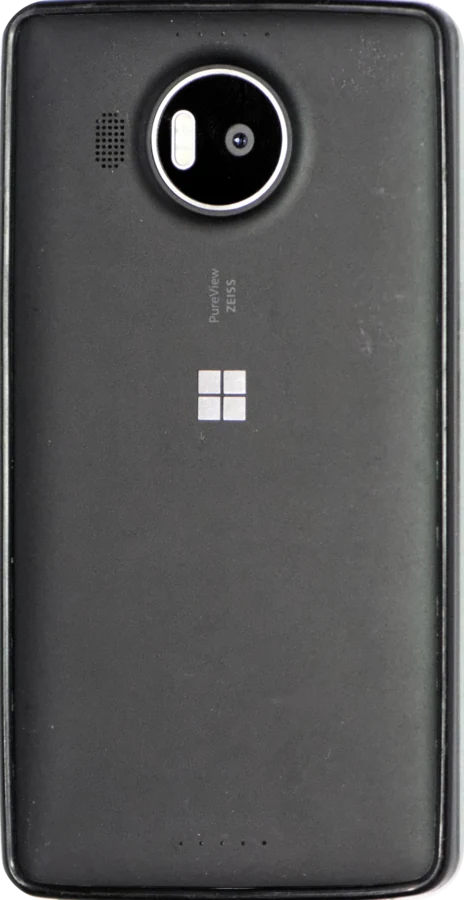

Lumia 950 XL

- Ultima build
- 11 novembre 2026
- Android
- 16 (BP4A.251205.006)
- LineageOS
- 23.2, userdebug, chiavi di test
- Patch di sicurezza
- 1 ottobre 2026
- Kernel
- 3.10.108, MMO msm8994
- Chip
- Snapdragon 810 (MSM8994)
- Nome in codice
- cityman
- SELinux
- Permissive
La prima build Android 16 per il Lumia 950 XL. Il telefono è uscito con Windows 10 Mobile e non ha mai avuto un produttore Android, per questo la build usa un kernel 3.10 con backport BPF, i blob Lumia di Android 13 adattati al linker Treble di Android 16 e wrapper HIDL per radio e Wi-Fi.
LineageOS è una distribuzione Android libera e sviluppata dalla community, basata sull’Android Open Source Project, e funziona senza app Google. Considera questa build sperimentale.
Novità della build 2026-11-11
- Funzionano i dock USB-C con alimentazione propria: dispositivi USB, Ethernet, video e ricarica attraverso il dock.
- Il segnale DisplayPort usa i valori del driver Windows e del riferimento Analogix, così il dock HD-500 si collega alla massima velocità.
- Niente più crash e blocchi quando scolleghi un dock o mentre il video è attivo.
Stato
- Funziona
- Sperimentale
- Non funziona ancora
- Da provare
Cosa funziona
Display e sistema
- Avvio (non A/B, la partizione cache è usata come /metadata)
- Display AMOLED WQHD con accelerazione GPU, display sempre attivo
- Touch, doppio tocco per riattivare
- Profili prestazioni (Risparmio, Bilanciato, Prestazioni) in Impostazioni > Batteria e nelle Impostazioni rapide
Rete e connessioni
- Wi-Fi (QCA6174), anche sui telefoni senza i MAC di Wi-Fi e Bluetooth impostati
- SIM, dati LTE e SMS (wrapper IRadio 1.4 sopra rild)
- Bluetooth, compreso lo streaming audio A2DP
- NFC
Chiamate e audio
- Chiamate vocali (CSFB, 2G e 3G) con capsula, microfono e vivavoce
- Riproduzione dall’altoparlante
Fotocamera e video
- Fotocamera posteriore: autofocus, stabilizzazione ottica, colori corretti, meno rumore ed esposizione più luminosa; video 1080p a 30 fps con una nuova modalità binned del sensore
- Fotocamera frontale: foto e video a colori, anche con poca luce, con i colori della calibrazione della fotocamera di Windows
- Flash LED posteriore e torcia
- App fotocamera di terze parti: Open Camera (Camera1 e Camera2, ISO e tempo di scatto manuali) e Arco
- Riproduzione video, YouTube con l’audio compreso, con decodifica e codifica in hardware (firmware Venus firmato per questo telefono)
USB-C
- ADB, USB OTG automatico
- Ricarica fino a 3 A con un caricatore USB-C; corrente ridotta sotto i 15 °C e niente ricarica sotto 0 °C, come su Windows
- Uscita video con semplici adattatori da USB-C a HDMI, fino a 1080p60
- Dock con alimentazione propria: dispositivi USB, Ethernet, video e ricarica. Provati con il Microsoft Display Dock HD-500, il ThinkPad USB-C Dock Gen 2 e un dock compatibile con Switch
Sensori, memoria e batteria
- Prossimità (schermo spento durante le chiamate), accelerometro, giroscopio, magnetometro, luce, barometro
- MicroSD
- Sospensione profonda a schermo spento; il display sempre attivo consuma circa 80-100 mA quando è acceso
Sperimentale
- VoLTE (chiamate in 4G) con lo stack IMS open source di phh. Si registra sulla rete IMS dell’operatore con l’autenticazione della SIM e IPsec, e gestisce da sé l’audio della chiamata. Provato su Iliad (Italia): chiamate in uscita con audio nei due sensi e SMS con il VoLTE attivo. Altri operatori possono funzionare se la loro rete lo accetta: segnala il tuo operatore e il risultato. Se i dati mobili si fermano dopo una chiamata VoLTE caduta, riavvia.
- Sblocco con l’iride (Impostazioni > Sicurezza e privacy > Sblocco del dispositivo). La fotocamera IR dell’iride, il suo LED IR e la registrazione funzionano, con un’anteprima IR dal vivo, ma il riconoscimento non sblocca ancora il telefono. È una biometria debole, quindi le app bancarie e i pagamenti non la accettano mai. Il LED IR lampeggia in sincronia con i fotogrammi della fotocamera entro i limiti del driver Windows, e in ogni caso il kernel lo spegne 100 ms dopo l’ultima scrittura.
In attesa delle vostre prove
- Chiamate con un auricolare Bluetooth (audio a banda stretta): corrette, in attesa di conferma
- Durata della batteria su lunghi periodi
- VoLTE con operatori diversi da Iliad e chiamate VoLTE in entrata
- Altri dock USB-C e lapdock: segnala il modello e cosa funziona
Non funziona ancora
- GPS: nessun fix satellitare per ora, lo sto studiando sul lato modem. Con le app Google installate, in Maps funziona la posizione di rete (Wi-Fi e celle)
- Riconoscimento per lo sblocco con l’iride
- Dock USB-C: il primo collegamento può non riuscire o riavviare il telefono (ricollegalo); il dock ThinkPad non ricarica il telefono; l’HP Elite x3 Lapdock dà il video ma non l’USB
- SELinux è permissive
Installazione
Un’installazione completa cancella Windows 10 Mobile. Leggi tutta la guida prima di iniziare. Installi a tuo rischio: non c’è garanzia, e un errore può lasciare il telefono senza avvio finché non lo recuperi da fastboot.
Con l’installer (consigliato)
L’installer cityman per Windows segue passo per passo l’installer LK ufficiale di Android4Lumia950 (Developer Menu, boot shim, LK, partizioni Android, provisioning), poi installa questa ROM con la TWRP per Android 16. La ROM ha bisogno di quella TWRP: con la versione precedente il suo zip si ferma.
Ti servono:
- Un PC con Windows 10 o 11
- WPInternals, per la prima installazione da Windows 10 Mobile
- Android SDK Platform Tools (adb e fastboot) nel PATH
- Il driver USB di Google, installato per tutto il sistema
- La batteria sopra il 50% e un buon cavo USB
- Una partizione cache in ext4, perché la ROM la usa come /metadata. Lo zip della ROM la controlla e, se non lo è, si ferma con le istruzioni
- Per Clean e Update avviati da Android: il debug USB attivo
| Modalità | Si parte da | Cosa fa |
|---|---|---|
| Full | Windows 10 Mobile, sbloccato con WPInternals e in modalità mass storage | Cancella Windows. Scarica i file ufficiali di Android4Lumia950 che gli servono (circa 110 MB) e salva sul PC i file di EFIESP e le 15 partizioni di provisioning prima di cancellare qualsiasi cosa. Un’installazione completa interrotta si può riprendere (vedi il README dell’installer). |
| Clean | LK e partizioni Android già presenti, per esempio LineageOS 18.1 di Android4Lumia950 | Installa questa ROM e cancella tutti i dati. |
| Update | Questa ROM | Installa la nuova build e mantiene i tuoi dati. |
- Scarica l’installer. Metti lo zip della ROM e il suo
SHA256SUMSinrom\, etwrp-cityman-a16.imgintwrp\. - Avvia
installer.bate scegli Full, Clean o Update. - Segui le istruzioni. Ogni passo distruttivo ti chiede di scrivere una parola di conferma, ogni file viene controllato con il suo SHA-256 prima di essere scritto, e l’esecuzione viene registrata in
logs\. - Aspetta il primo avvio: richiede diversi minuti.
L’installer corregge anche un bug dello script ufficiale partition.sh, che poteva formattare la partizione aboot (LK) mentre creava boot.
Installazione manuale
- Segui la guida ufficiale di Android4Lumia950: il video di installazione e l’installer LK, branch cityman-temp.
- Quando l’installer si è riavviato nella sua TWRP e ti chiede di fare il sideload di una ROM, fermati lì. Non lasciargli installare il suo kernel di LineageOS 18.1.
- Riavvia nel bootloader (fastboot) e avvia la TWRP per Android 16:
fastboot boot twrp-cityman-a16.img - Solo alla prima installazione: Wipe > Format Data, poi cancella Cache e Dalvik.
- Fai il sideload della ROM da Advanced > ADB Sideload.
SHA256SUMSserve solo all’installer.adb sideload lineage-23.2-20261111-UNOFFICIAL-cityman.zip - Facoltativo: fai il sideload di un pacchetto GApps per Android 16 (MindTheGapps o NikGapps core) prima del primo avvio.
- Riavvia.
Aggiornamento
Avvia l’installer in modalità Update, oppure avvia di nuovo la TWRP per Android 16 (passo 3 qui sopra) e fai il sideload del nuovo zip senza cancellare i dati. Se usi le GApps, rifai il loro sideload subito dopo la ROM, prima di riavviare.
Se resta in bootloop
Entra in fastboot, avvia la TWRP per Android 16 con fastboot boot e installa di nuovo la ROM, oppure avvia l’installer in modalità Clean o Update.
Download
- ROM, build 2026-11-11Release su GitHub con lo zip (circa 1 GB) e il suo SHA256SUMS
- InstallerPer Windows, con le modalità Full, Clean e Update
- TWRP per Android 16
twrp-cityman-a16.img, richiesta da questa ROM - Installer LK di Android4Lumia950Quello ufficiale, branch cityman-temp, per l’installazione manuale
Extra
Arco
Un’app fotocamera con un’interfaccia in stile Lumia: quadranti ad arco per bilanciamento del bianco, messa a fuoco, ISO, tempo di scatto ed esposizione, ed elaborazione RAW multi-frame facoltativa sulla GPU, simile alla GCam.
Arco su GitHub, e le altre app e strumenti per questi port.
Sorgenti
- KernelKernel MMO msm8994, branch lineage-23-cityman
- Device treeBranch lineage-23-cityman
- VendorBranch lineage-23-cityman
- Manifest locale e patchTutto quello che serve sopra LineageOS 23.2 per compilarla
- CitymanPartsProfili prestazioni
- cityman-irisMotore di riconoscimento dell’iride e servizio di sblocco
- krazey/imsStack IMS per il VoLTE, con una patch nel manifest locale
Crediti
Questa build si regge sul lavoro di molte persone. Grazie a tutti.
- Android4Lumia950 (djokcho, EpicLPer, j0sh1x e la community): il port Android di Lumia 950 e 950 XL, il kernel MMO e gli alberi talkman su cui si basa questo lavoro.
- shadowofleaf96: device tree cityman, amplificatore TAS2553 e audio Quaternary MI2S, instradamento delle chiamate.
- EpicLPer: port del driver dell’amplificatore TAS2552/3, prime ricerche su sensori e NFC.
- archienz: misure della fotocamera posteriore del Lumia 950 (mappa delle lane CSI, MCLK a 24 MHz, disposizione CCI).
- hraj9258 (Himanshu Raj): la taratura della fotocamera posteriore dal suo port talkman, con la chromatix dell’IMX230 (livello del nero e matrice colore del modulo), la taratura dell’autofocus, il driver dell’attuatore della lente e il suo supporto nel kernel, il driver e la libreria del flash LED Hill e le ricerche sui clock della fotocamera; analisi e misure del rilevamento della microSD.
- davigamer987: gli HAL display, audio e media MSM8994, l’albero Android 16 del OnePlus 2 usato come riferimento (integrazione del wrapper radio, configurazione dell’HAL Wi-Fi, metodo di patch dei blob) e i blob perfd del OnePlus 2.
- mukul2259 e LineageOS-OP2: ottimizzazione di prestazioni e scheduler del OnePlus 2.
- Yaroslav Zviezda (acroreiser): il wrapper IRadio 1.4 di LineageOS e RadioConfig per i vecchi dispositivi Qualcomm.
- Pierre-Hugues Husson (phhusson): lo stack IMS open source usato per il VoLTE; krazey: il suo fork per LineageOS 23; amikhasenko (rnnoise) e ewan-xu (AEC3): le sue parti audio.
- Ultra-Legacy-Hippeastrum (acroreiser, Lost-Entrepreneur439 e gli autori delle patch che raccolgono: phh, Adithya R, Roman Stratiienko, davigamer987): legacy_support_patches e la sepolicy QCOM legacy per Android 16 sui kernel vecchi.
- GuaiYiHu e xiaomi-classic-dev: backport BPF per i kernel 3.x (leo, libra).
- LineageOS-UL: l’HAL audio msm8992 e l’HAL GPS msm8994.
- LineageOS e TheMuppets: il sistema di base e gli alberi vendor di riferimento.
- TeamWin: TWRP. La TWRP per Android 16 è la TWRP cityman dell’installer Android4Lumia950 con il kernel Android 16.
- sonic011gamer (snaccy): il branch cityman-temp dell’installer Android4Lumia950 e il video di installazione.
- René Lergner: WPInternals.
- Konrad Dybcio e WOA-Project: documentazione dell’hardware di Lumia 950 e 950 XL nei kernel mainline e WOA; gus33 (WOA-Project) e gli autori di LumiaWoA: i driver ricostruiti di PHY e mux USB-C.
- Analogix: i valori di riferimento dell’ANX7816 per il segnale DisplayPort.
- Aleksandar Jovanovic: prove dei dock USB-C.
- Microsoft e Qualcomm: i driver Windows Phone del Lumia 950 XL, riferimento per la calibrazione della fotocamera, la fotocamera e il LED IR dell’iride, i limiti di ricarica della batteria, il power delivery USB-C e il bridge DisplayPort. Il motore di riconoscimento dell’iride segue i metodi pubblicati da J. Daugman.